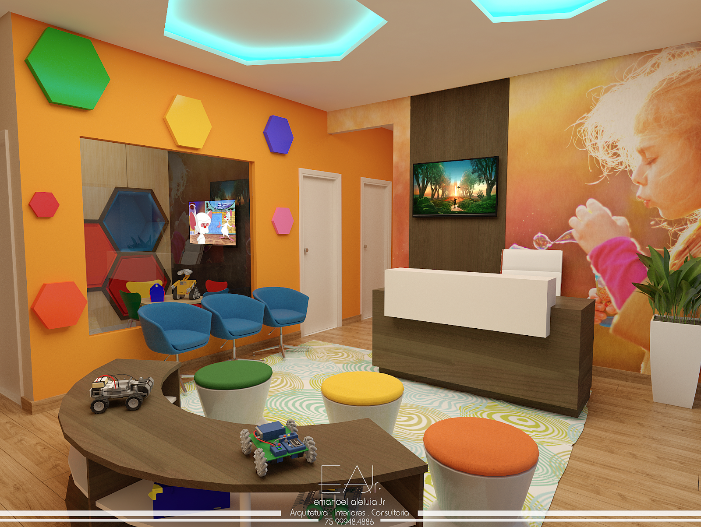

Clínica Geral
Esse profissional está apto a tratar diversas doenças e só precisa encaminhar seu paciente quando houver necessidade de um especialista.
AgendarPsicologia
O psicólogo atua no diagnóstico, prevenção e tratamento de doenças mentais, de personalidade ou distúrbios emocionais.
AgendarPediatria
Pediatria é a especialidade dedicada ao cuidado da saúde de crianças, adolescentes e pré-adolescentes.
AgendarOftalmologia
O oftalmologista é o profissional que estuda, diagnostica e trata dos olhos e suas doenças, uma vez que tem por sua responsabilidade realizar consultas, perguntando sobre o histórico da saúde ocular da família do paciente.
Agendar